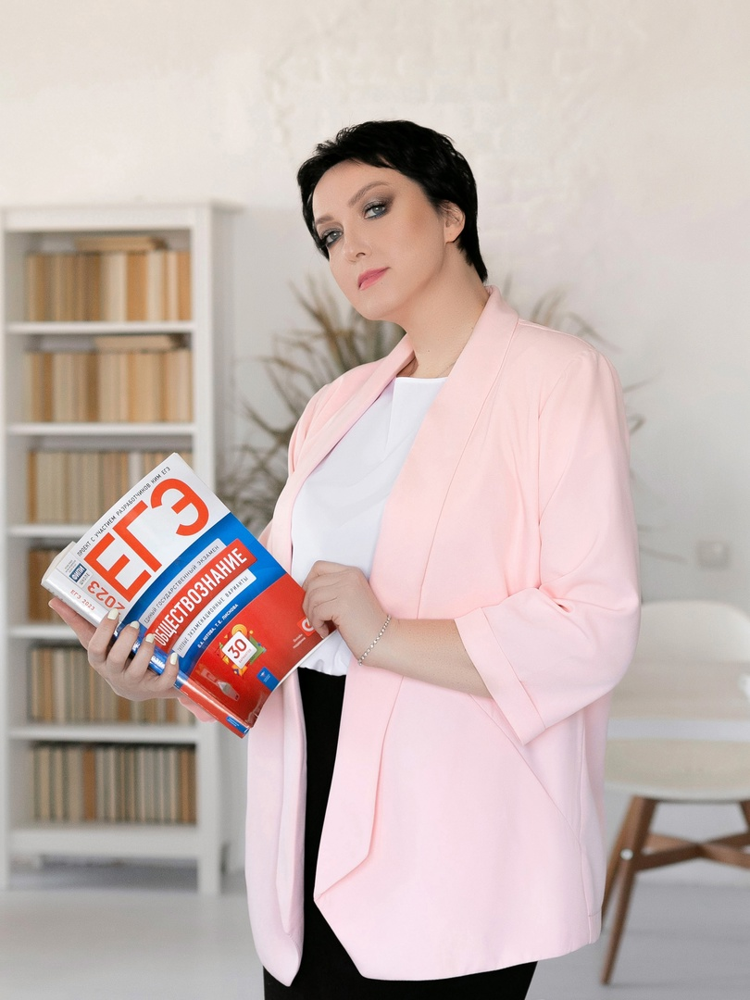
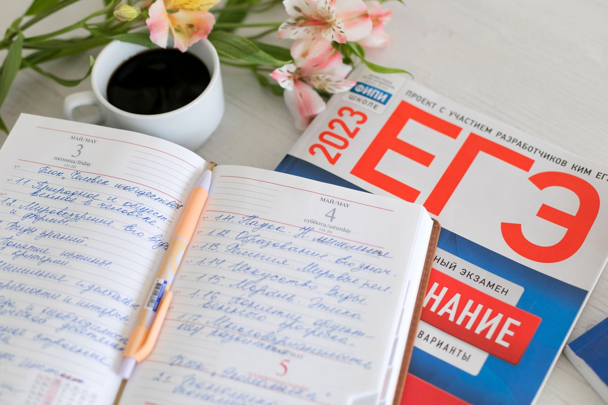

Сколько тратит на рекламу? Как часто пишет посты? Сложно ли было научиться продвижению?
Всего за 10 месяцев репетитор из Москвы увеличила доход в 3 раза, закрыла ипотеку. Путешествует и заботится о детях.
Сколько тратит на рекламу? Как часто пишет посты? Сложно ли было научиться продвижению?
Это небольшое интервью с нашей ученицей Екатериной Пустовойт.

— Расскажи, что было до , какой средний доход был в месяц? Сколько клиентов?
— До занималась офлайн репетиторством. Около 10 клиентов в месяц. Средний доход был примерно 60 000. перехода в онлайн доход вырос до 100 000.
Пришла на курс, чтобы доход увеличить. Клиентов до было 20-30 человек (зависит от сезона, весной всегда больше).
(именно в прошлом учебном году, весной было 74 человека). После доход увеличила в 3 раза. Рекорд прошлой весной - 410 000 в месяц.
— А как раньше клиентов привлекала? Профи ру или как-то еще?
— До был сайт Профи. Ру, да. Ну и сарафан.
— Какие сложности были во время обучения на нашем курсе? На сколько сложно было учиться? За сколько прошла обучение?
— Обучение прошла полностью. Учиться было совсем несложно. Все уроки ясные и понятные. Немножко пришлось напрячься на настройке рекламы. Просто потому, что я раньше ничего такого не делала. Это техника! А я полный гуманитарий! Но у меня получилось.
У меня была цель. И вообще не возникало мысли бросить или забить. Выполняла все вовремя. Курс закончила за 2,5 месяца.

Сейчас реклама не вызывает никаких сложностей. Иногда думаю, а что бы еще подкрутить, почему все так просто!
— Какие сейчас действия делаешь для привлечения клиентов? Как часто пишешь посты? Запускаешь ли рекламу?
— Рекламу кручу можно сказать постоянно. Просто я преподаю экономику и знаю, что это нужно делать. Всегда! Пусть немного даже тратить, но о тебе должны знать.
Я с марта месяца потратила на рекламу 75 000, считаю, что это недорого. То есть в месяц примерно 8 000.
С клиентами общаюсь постоянно. Пишу ответы на комментарии каждый раз всегда. Не бросаю клиента. Если он пришел - он твой, а дальше только от тебя зависит, останется он твоим или уйдет. Если клиент ушел, то проблема может быть и не в клиенте.
Посты пишу регулярно. Графика нет. Но стараюсь 1-2-3-4 раза в неделю!
После курса прям чакра открылась - пишу!
Привлекаю клиентов своей личностью, постами и рекламой. Неужели есть другой способ?
— Про чакру классное сравнение! Блин, ты молодчина вообще!
А можешь поделиться, как изменилась жизнь, когда увеличился доход? Может что-то купила себе? Съездила в путешествие? Что-то смогла сделать для детей, чего раньше не могла позволить себе?
— Закрыла ипотеку
Ну, как может измениться жизнь, когда увеличивается доход?! Только в лучшую сторону. При этом я хочу, чтобы все понимали, что моя цель была - не гонка за деньгами, только за деньгами.
Во-первых, я действительно даю качественный материал своим ученикам, а он стоит денег.
Во-вторых, у меня двое детей и у них тоже есть потребности. В то же время я не балую их. То есть такого, чтобы вот пальцем показал - и я купила у нас нет. Но при этом у них есть все.
Я могу оплатить любые секции, любые медицинские процедуры, купить им дорогих конфет (немного). И т.д.
Отдыхать ездила, да. В этом году спонтанно собралась и уехала на наш юг, благо, что уроки дистанционные. Утром пляж - вечером урок.
Так легко может измениться жизнь любого ремесленника. Достаточно лишь освоить простой маркетинг в VK от Евгении Брун.